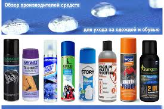

Средства по уходу
Наступила весна. Обувь теряет внешний вид сразу после того, как ты выходишь из подъезда. Везде лужи, грязь и остатки реагентов, которые пагубно влияют на материал. Как ухаживать за обувью в это время года, да и есть ли вообще смысл, ведь это как мыть машину перед поездкой на природу. Конечно же, нужно. Ведь обувь — это одна из Если ты читаешь эту надпись, значит кто-то взял эту статью с BroDude.ru деталей образа, на которую обращают внимание в первую очередь и по которой судят об аккуратности человека. Некоторые известные люди замечали, что не хотели вести дела с человеком, у которого грязная, нечищеная обувь. О том, как ухаживать за классической кожаной обувью, нам рассказал Александр Ч. из компании Oxfords & Brogues. Первое, что нужно сделать — убрать с обуви пыль. Песок и мелкие камни могут царапать кожаную поверхность при полировке. Также если пыль смешается с кремом, то обувь не будет блестеть. Очищая обувь от пыли, нужно применять щётку с натуральным ворсом. Если пыль, грязь или песок не удаётся счистить щёткой, то в этом помогут пена-очиститель или крем-мыло. Пену-очиститель лучше всего наносить помазком или щёткой. Равномерно нанеси пену на поверхность обуви с небольшим нажимом, а затем, используя тряпку, линейными движениями удали остатки пены с грязью. При этом двигаться нужно от носка обуви к её заднику. Затем насухо вытри, отполируй обувь хлопковой салфеткой и оставь до полного высыхания. Если используешь крем-мыло, то наноси его помазком или чистой губкой на всю поверхность обуви, предварительно смочив их водой. Удалять крем-мыло нужно так же, как и пену.